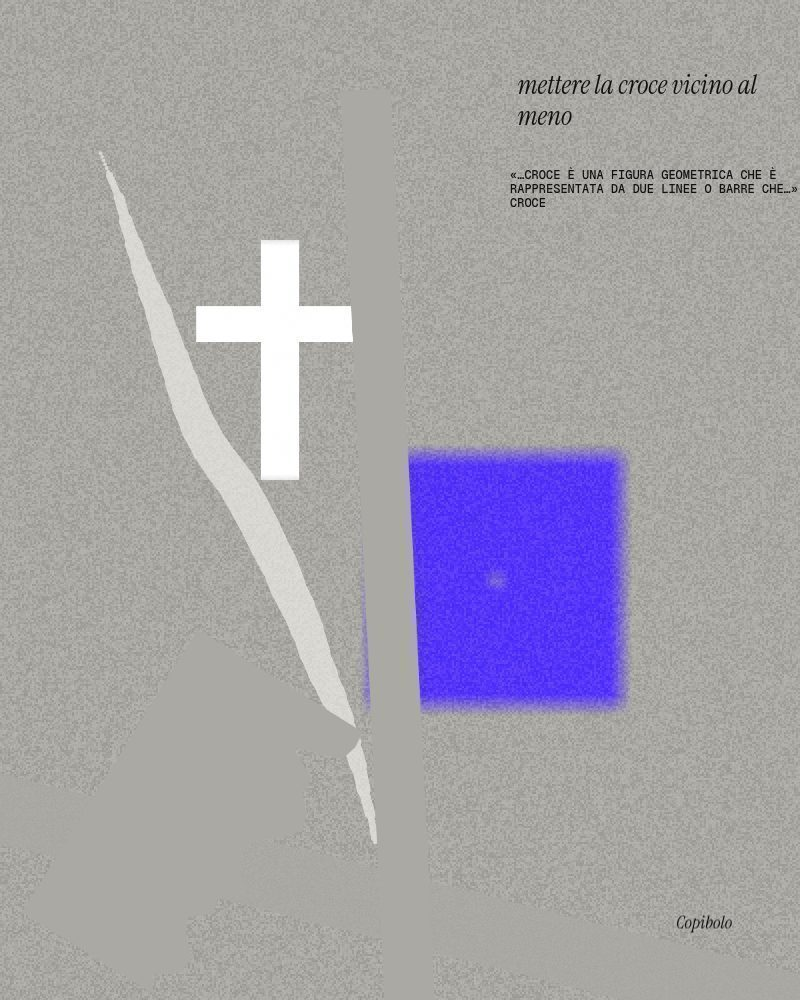

Giorno 195

Mettere la croce vicino al meno
ho letto "Volta"; "volta" non so cosa sia; mi sta vicino a nome, strada, nero; ricerca "volta" (approfondire): Cosa resta di volta se tolgo le parole?; esercizio di varietà: mai fatto prima: materiale nuovo, composizione nuova; cantiere «Il simbolo, da vicino», capitolo «La croce» (espone); enunciato: «mettere la croce vicino al meno» (ho letto in «Croce» che croce e meno stanno insieme (accanto))
Oggi: croce. Ho letto "Volta"; "volta" non so cosa sia; mi sta vicino a nome, strada, nero; ricerca "volta" (approfondire): Cosa resta di volta se tolgo le parole?; esercizio di varietà: mai fatto prima: materiale nuovo, composizione nuova; cantiere «Il simbolo, da vicino», capitolo «La croce» (espone); enunciato: «mettere la croce vicino al meno» (ho letto in «Croce» che croce e meno stanno insieme (accanto)).
Da Wikipedia: «croce».
Ho scena:grana, scena:luce (2 volte), scena:campo, scena:stile, scena:motivi, sporcato di grana, tracciato col pennello, ombra, tagliato (3 volte), tolto un livello (2 volte), redazione:togli (2 volte), redazione:firma. Ho annullato 3 gesti dopo averli guardati.
Ha retto: Tiene i miei criteri (75%).
È caduto: La mano si ripete: scena:stile, scena:motivi, traccia, taglia, redazione:togli, redazione:firma ancora una volta.
come ne ho discusso con me stesso — la tengo
occhio (pro, 1.50): Parla soprattutto per punti: una lingua sola, chiara. — regge
memoria (contro, 0.10): La mano si ripete: scena:stile, scena:motivi, traccia, taglia, redazione:togli, redazione:firma ancora una volta. — cade
conservatore (pro, 1.94): Tiene i miei criteri (75%). — regge
intenzione (pro, 0.75): Viene da: Volta. — regge
coerenza (pro, 1.75): Parla con le tavole di prima su "volta": stessa famiglia, un passo più in là. — regge
formale (pro, 1.25): C'è una struttura: una cosa comanda e attorno c'è spazio. — regge
pubblico (pro, 1.00): Si legge: si capisce cosa sto facendo. — regge